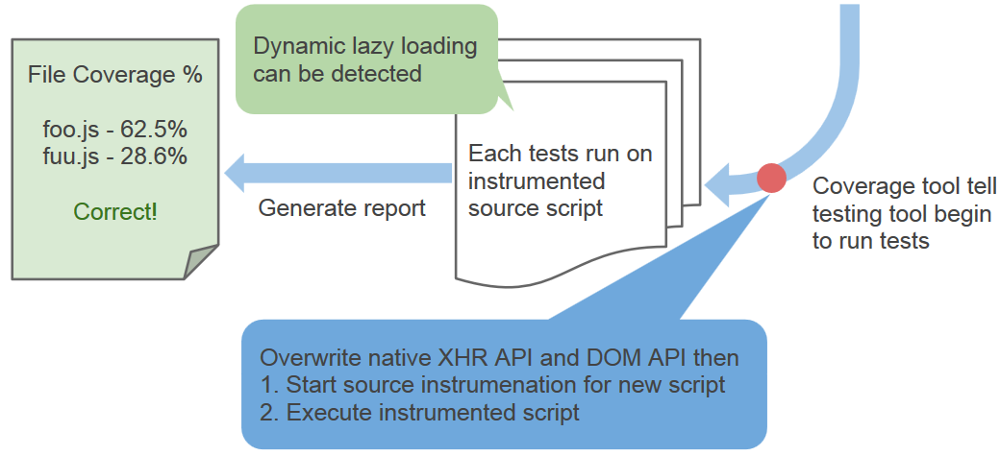

Test Coverage on
Dynamic Lazy Loading JavaScript
Created by Ricky Chien
Test coverage
Why we need test coverage?
For better software quality, we need to write tests
Coverage tool can give us a statistics report after testing

Blanket.js - JavaScript test coverage tool
Web application
Web is changing
Nowadays, web is going to become more complicated
Browser can take more jobs than server

Web application depends on network

Dynamic lazy loading
Background
Source instrumentation

Before

After
Coverage mechanism in web
Browser instrumentation / Server instrumentation
Browser instrumentation

Server instrumentation

If situtaion is more complicated
Sometimes we need to interact with a real server

Issue - Zero coverage
In browser instrumentation
Case
Firefox OS email app should be covered 21 modules

Improve browser instrumentation
Make it possible to cover dynamic lazy loading scripts
Analysis
Analyze web loading approachs
Script Loading - HTML Script
<script src="path-to/script.js"></script>
Script Loading - XHR (Ajax)
var xhr = new XMLHttpRequest();
xhr.open('GET', 'path-to/script.js'); // Assign script url
xhr.onload = function (script) {
eval(script); // Execute script
};
xhr.send();
Script Loading - Document.write
document.write('');
Script Loading - DOM modification API
appendChild / insertBefore / replaceChild
var script = document.createElement("script");
script.src = url; // Assign script url
document.head.appendChild(script);
parentNode.insertBefore(script, node);
parentNode.replaceChild(script, oldNode);
Script Loading - Function Wrapping
Famous module loader library such as RequireJS using syntax :
require(["path-to/script.js"], function() {
// This function is called after path-to/script.js has loaded.
});
Summary
Method
Browser Instrumentation Process

Solution
DOM modification API
Overwrite native appendChild / insertBefore / replaceChild
var originalAppendChild = Element.prototype.appendChild;
Element.prototype.appendChild = function(newElement) {
// Do our hack here
return originalAppendChild.apply(this, args); // invoke native method
};
XHR API
Overwrite native open method in XHR object
var originalXHROpen = XMLHttpRequest.prototype.open;
XMLHttpRequest.prototype.open = function(method, url) {
// Do our hack here
return originalXHROpen.apply(this, args); // invoke native method
};
Achievement
A simple dynamic lazy loading website
New feature has landed in Firefox OS

Conclusion
We demonstrated the zero coverage issue
Analyzed source instrumentation mechanism and dynamic lazy loading schemes
Proposed a solution to overwrite native Web APIs to detect dynamic lazy loading
Solution was succssful and safe that even integrated into FFOS testing framework
New feature has proposed to Blanket